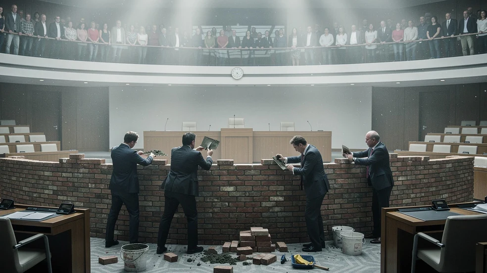

Die Brandmauer gegen 59 Prozent

Am 20. September wählt Mecklenburg-Vorpommern. Die AfD liegt in der im Juli veröffentlichten NDR-Umfrage bei 36 Prozent. Die CDU bei neun. Trotzdem hält die CDU gemeinsam mit SPD und Linken an einer Brandmauer fest, die jede Zusammenarbeit mit der stärksten Partei ausschließen soll.
Der NDR ließ die Wähler selbst fragen. Ihre Antwort fällt anders aus.
59 Prozent finden es akzeptabel, wenn andere Parteien Anträgen der AfD zustimmen. 62 Prozent akzeptieren gemeinsame Anträge oder Beschlüsse, die mit Stimmen der AfD zustande kommen. Infratest dimap befragte dafür 1.167 Wahlberechtigte per Telefon und online. Die Schwankungsbreite liegt bei höchstens drei Prozentpunkten. Beide Mehrheiten bleiben selbst am unteren Rand bestehen.
Die Wähler unterscheiden sehr genau. Einen AfD-Ministerpräsidenten lehnen 51 Prozent ab. Knapp die Hälfte hält dagegen eine Regierungsbeteiligung der AfD für akzeptabel. Bei Sachentscheidungen im Parlament wollen 59 beziehungsweise 62 Prozent den Inhalt eines Antrags beurteilt sehen. Die Brandmauer macht das Gegenteil: Nicht der Inhalt entscheidet, sondern der Absender.
Die Parteien interessiert diese Unterscheidung nicht.
Die Linke schließt jede Zusammenarbeit aus. Ministerpräsidentin Manuela Schwesig will sich von AfD-Abgeordneten nicht abhängig machen. Die CDU erklärt eine Zusammenarbeit für die „demokratischen Parteien“ für unmöglich.
Ausgerechnet die CDU. Sie kommt in derselben Umfrage auf neun Prozent und schneidet damit als erste Union überhaupt in einer Ländertrend-Erhebung einstellig ab. Die AfD ist in der Umfrage viermal so stark. Trotzdem beansprucht die Neun-Prozent-Partei das Recht, festzulegen, welche Stimmen im Parlament politisch ansteckend sind.
Auch die Sachkompetenzen haben sich verschoben. Bei Zuwanderung sehen 37 Prozent die AfD vorn, bei der Vertretung ostdeutscher Interessen 31 Prozent, bei Wirtschaft 30 Prozent und beim Arbeitsmarkt 29 Prozent. Die CDU erreicht bei Wirtschaft noch 15 Prozent, bei Arbeit elf.
Die Brandmauer hat die AfD nicht isoliert. Sie hat die CDU isoliert.
Im Parlament wird daraus eine bemerkenswerte Mechanik. Ein Vorschlag gilt als demokratisch, solange er von der richtigen Partei kommt. Reicht die AfD denselben Gedanken ein, soll bereits die Zustimmung daran unanständig sein. Der Stimmzettel entscheidet zwar über die Zusammensetzung des Landtags. Welche Stimmen danach zählen dürfen, bestimmen die Parteien untereinander.
Am 20. September steht die Mauer nicht auf dem Stimmzettel. Ihre Erbauer schon.
Weiterlesen: Ein Drittel, das nicht sein darf